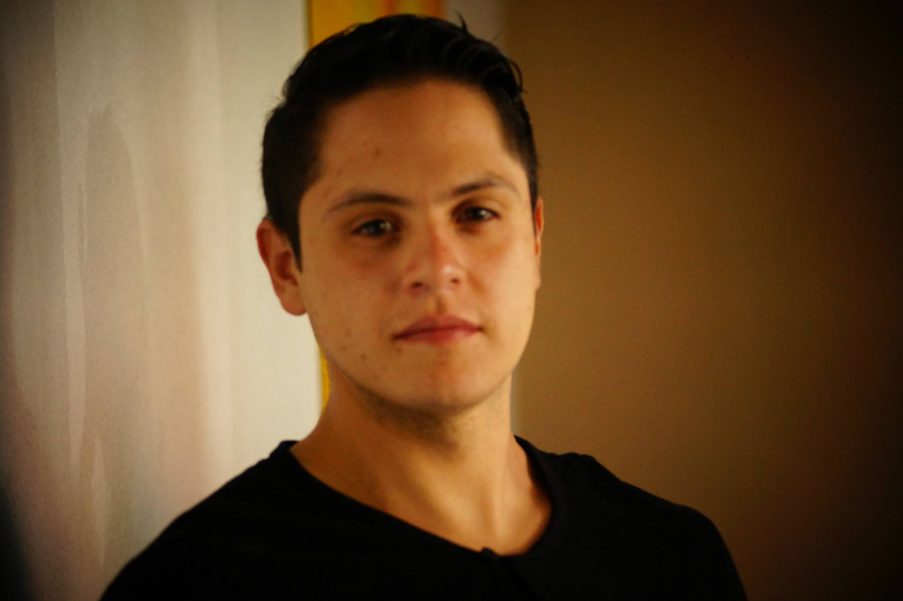

Date of birth q5/06/1984
Residence: Zoetermeer, Netherlands

'You can find in me an enthusiast and problem solver with passion for fine arts. Always willing to learn more and implement new skills in each one of my projects. I consider myself as a person that enjoys team work and sharing knowledge'
As Virtual producer I have designed and manage a pipeline and work flow to create real time 3D content. Developing a series of shows that got us the recognition of Unreal Engine , Wilder World and other referents of virtual production and real time 3D entertainment. All of this while keeping cohesion, pro-activity and a positive attitude inside the team. Unreal Engine is the main platform used as a base for this pipeline, in conjunction with a diverse range of motion capture technologies like Vicon, Faceware, Yanus, Stretch Sense, and of course other software such as Maya, Blender and Houdini.
uring my period at Platige Image, I developed a diverse range of visual effects for renown brands, Theatrical plays and other kind of creative events. Collaborating in the creation of a work flow that introduced new technologies into the already robust VFX pipeline. I mostly made use of Unreal Engine, Houdini and Niagara particle systems
My main role was lighting and shading using Maya and Arnold , as well as VFX with Houdini
As a LIGHTING/HOUDINI artist I crafted a diverse range of procedural visual effects, dynamic simulations as well as creating the lighting and the final look for some of the many projects we had, such as the renown Polish chocolate brand Wedel and featured animation such as Diplodocus . Always pushing for the best quality. Human was a place for learning and helped me gain a good amount of experience
Successfully completed the Master’s, acquiring the necessary skills to have proficiency in the digital effects pipeline, highlighting my abilities in problem solving, camera acquisition, tracking (PFtrack, 3D modeling in Zbrush, the use of Houdini and Nuke as parallel work flow
This degree is focused on Marketing, advertising and product design
Mother tongue
Fluent
Basic